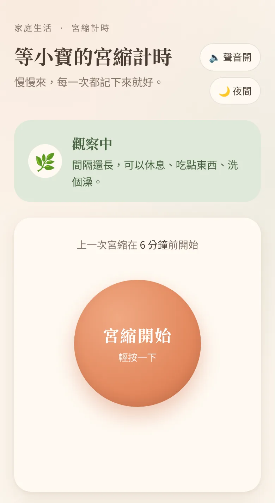
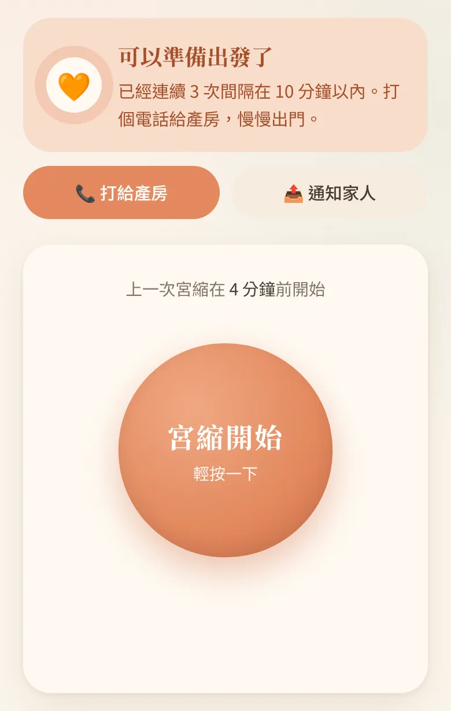
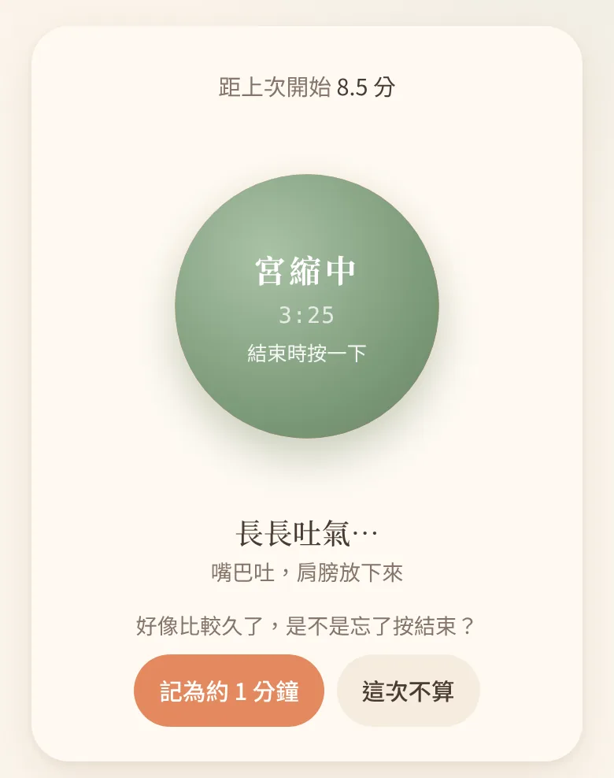
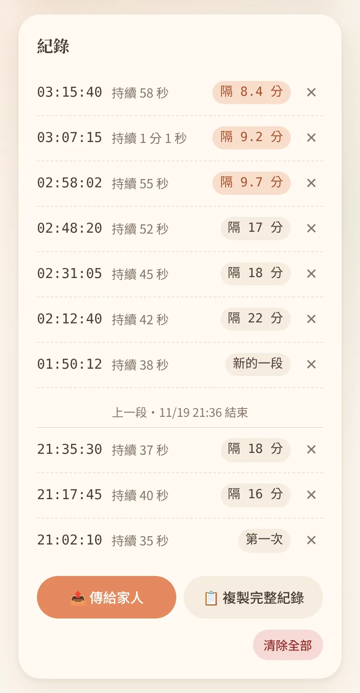
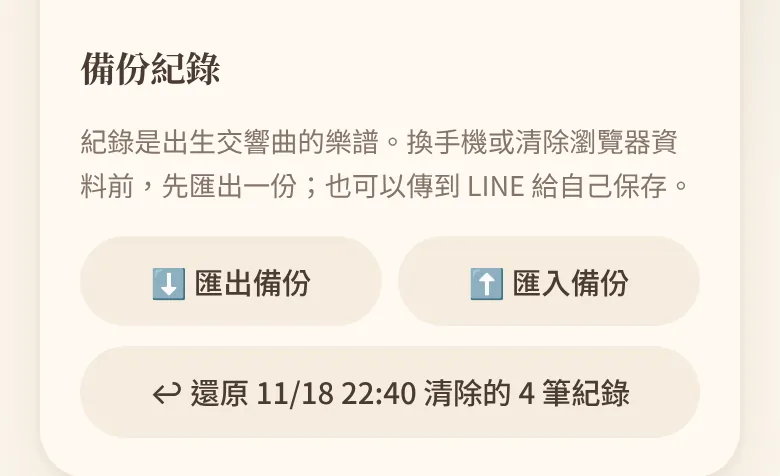

技術筆記 · 宮縮計時
宮縮計時是給太太待產用的單頁工具：一顆大按鈕記錄宮縮，自動判斷什麼時候該出發，並陪著呼吸。這份筆記用六張圖，從使用情境拆解它的功能和背後的規則，方便日後修改時知道會影響哪個情境。
整個工具圍繞五個階段設計。情緒曲線在「出發去醫院」跌到最低：最痛、最趕，也最容易手忙腳亂，所以這個階段的功能都做成「狀態一到，按鈕就自己出現」，不需要找。
實際畫面

畫面上方的狀態卡由一個狀態機決定。「間隔」一律從上一次開始算到這一次開始，而且只看目前這一段（相隔超過 2 小時就分成新的一段）。
實際畫面

整頁只有一顆主要按鈕，同一顆按鈕負責開始和結束。慌亂時常見的兩種失誤：按太快、忘了按結束，都在流程裡接住了。
實際畫面

工具本身不分辨是誰按的。真正跨人的時刻只有兩個：太太把摘要傳給家人，以及打電話給產房。下面是最常見的一條路徑。
實際畫面
宮縮紀錄｜03:19 準備出發，已連續 3 次間隔在 10 分鐘內 平均間隔 9.1 分鐘 每次持續 約 54 秒 近一小時 5 次 上一次 4 分鐘前 最近：03:15・03:07・02:58・02:48
所有資料都存在這支手機的瀏覽器裡（localStorage 的 milo-contraction-v1），沒有任何伺服器。紀錄同時是出發判斷的依據，也是出生交響曲的樂譜，所以清除前一定會先封存。
實際畫面


宮縮進行中，按鈕、引導文字和呼吸伴奏共用同一個 10 秒循環：吸氣 4 秒、吐氣 6 秒。吐氣比吸氣長，是讓人放鬆的關鍵。
cubic-bezier(.37, 0, .63, 1) 的緩動，在最大和最小時自然停頓。光暈跟按鈕同一個節奏，範圍是 78% ↔ 130%。手機開啟「減少動態效果」時，動畫會自動關閉。實際畫面
圖依據 family/contraction-timer.html 2026-11-17 的版本繪製；實際畫面是 2026-11-19 用假資料拍攝，介面改了之後執行 python3 scripts/capture-contraction-timer.py 就能重拍。改了判斷規則或流程時，記得同步更新這份圖解，並執行 python3 scripts/test-contraction-timer.py。